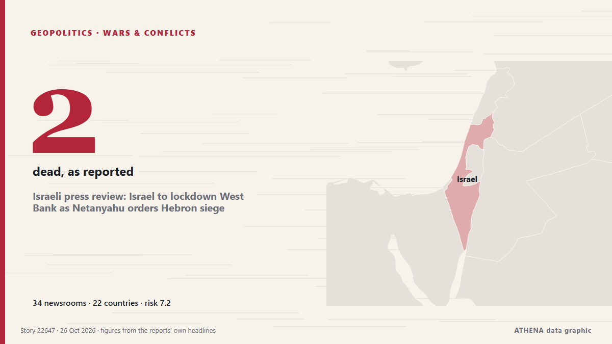

Israeli press review: Israel to lockdown West Bank as Netanyahu orders Hebron siege

The IDF is besieging Hebron and several villages in the area as it raids the Palestinian assailants' homes. από Haaretz (English)
Αναφέρθηκε ανεξάρτητα από 34 μέσα σε 22 χώρες από τις 23 Οκτ, πρώτο από το Haaretz (English)· η κάλυψη εξασθενεί. Το ATHENA εκτιμά τον κίνδυνο υψηλό (7.2/10), κυρίως λόγω της σοβαρότητας της βλάβης που περιγράφεται και της γεωγραφικής και τομεακής εμβέλειάς του. Η βεβαιότητα είναι 87% (υψηλή), καθώς το επιβεβαιώνουν 34 ανεξάρτητα μέσα με μέση αξιοπιστία πηγών 78%. Ποιοι το ανέφεραν: 5 μέσα στη χώρα Ισραήλ · Israel, 3 μέσα στη χώρα Ινδία · India, 2 μέσα στη χώρα Ηνωμένες Πολιτείες · United States. Η κάλυψη διήρκεσε από 23 Οκτ έως 24 Οκτ, 33 ώρες.
Γιατί έχει σημασία: Η σελίδα παρακολουθεί τη σύγκρουση που αφορά το Ισραήλ, τη Γάζα, τη Δυτική Όχθη και τον Λίβανο — στρατιωτικές εξελίξεις, ανθρωπιστική κατάσταση και διπλωματία — όπως την καλύπτουν μέσα από όλο τον κόσμο.
Τι άλλαξε: 3 νέες αναφορές από 3 μέσα στο 24ωρο έως 26 Οκτ.
Πρώτη διατύπωση: Israeli forces displace 2,000 Palestinians in Hebron after deadly attack on soldiers
Οι τίτλοι των ειδήσεων παρουσιάζονται στα αγγλικά, όπως δημοσιεύτηκαν.
Με μια ματιά
Επιλέγεται, βαθμολογείται και γράφεται από τη δημοσιευμένη μεθοδολογία του ATHENA. Κανένας συντάκτης δεν παρεμβαίνει σε μεμονωμένα γεγονότα. Πώς παράγεται ›
| 23 Oct 04:58 UTC | 5 |
|---|---|
| 23 Oct 07:58 UTC | 1 |
| 23 Oct 10:58 UTC | 2 |
| 23 Oct 13:58 UTC | 2 |
| 23 Oct 16:58 UTC | 4 |
| 23 Oct 19:58 UTC | 5 |
| 23 Oct 22:58 UTC | 4 |
| 24 Oct 01:58 UTC | 0 |
| 24 Oct 04:58 UTC | 0 |
| 24 Oct 07:58 UTC | 4 |
| 24 Oct 10:58 UTC | 11 |
| 24 Oct 13:58 UTC | 11 |
| 24 Oct 16:58 UTC | 3 |
| 24 Oct 19:58 UTC | 6 |
| 24 Oct 22:58 UTC | 2 |
| 25 Oct 01:58 UTC | 3 |
| 25 Oct 04:58 UTC | 2 |
| 25 Oct 07:58 UTC | 2 |
| 25 Oct 10:58 UTC | 4 |
| 25 Oct 13:58 UTC | 3 |
| 25 Oct 16:58 UTC | 0 |
| 25 Oct 19:58 UTC | 1 |
| 25 Oct 22:58 UTC | 0 |
| 26 Oct 01:58 UTC | 0 |
| 26 Oct 04:58 UTC | 0 |
| 26 Oct 07:58 UTC | 0 |
| 26 Oct 10:58 UTC | 0 |
| 26 Oct 13:58 UTC | 1 |
| 23 Oct 06:41 UTC | 3.9 |
|---|---|
| 23 Oct 06:43 UTC | 5.5 |
| 23 Oct 12:28 UTC | 5.7 |
| 24 Oct 00:07 UTC | 7.2 |
| 24 Oct 03:46 UTC | 6.7 |
| 24 Oct 12:52 UTC | 7.4 |
| 24 Oct 17:51 UTC | 7.5 |
| 24 Oct 21:04 UTC | 7.9 |
| 25 Oct 04:05 UTC | 7.3 |
| 25 Oct 04:21 UTC | 7.9 |
| 25 Oct 15:34 UTC | 7.3 |
| 25 Oct 21:14 UTC | 7.3 |
| 26 Oct 16:39 UTC | 7.2 |
Γιατί αυτοί οι αριθμοί
Σημασία
Κίνδυνος
Βεβαιότητα
Η κάλυψη — ποιος το ανέφερε και πότε
ο τίτλος όπως δημοσιεύτηκε · ανοίγει το πρωτότυπο- Haaretz (English) · Ισραήλ · IsraelFive Israelis wounded in West Bank shooting near Hebron: Two Palestinian assailants killed
- Middle East Eye · INTIsraeli military says forces kill suspected shooters near Hebron
- Middle East Eye · INTMore on the shooting attack near Hebron
- The New Arab · INTHebron shooting: 2 Palestinians killed, 6 Israelis wounded
- The Jerusalem Post · Ισραήλ · IsraelNetanyahu orders Hebron sealed off, full West Bank closure after Hamas terror attack
- Middle East Eye · INTSmotrich orders Palestinian building demolitions near Hebron shooting site
- CBS News (World) · Ηνωμένες Πολιτείες · United StatesIsrael vows major West Bank operation after attack kills 2 troops
- Shafaq News (English) · Ιράκ · IraqNetanyahu orders Al-Khalil lockdown after deadly shooting
- Times of India · Ινδία · IndiaNetanyahu orders sweeping West Bank offensive after deadly Hebron attack
- The New Arab · INTNetanyahu vows collective punishment after Hebron shooting
- Middle East Eye · INTNetanyahu vows large-scale West Bank operation, starting with expulsion of Palestinians in Hebron
- Arab News · Σαουδική Αραβία · Saudi ArabiaRights group says Israel plans to displace Palestinians after attack
- Al Jazeera English · Κατάρ · QatarIsrael locks down occupied West Bank after Hebron shooting
- Middle East Eye · INTRights group urges global pressure to halt Israel’s planned expulsions in Hebron
- MyJoyOnline · Γκάνα · GhanaIsraeli forces begin demolishing Palestinian buildings in Hebron after two Israeli soldiers shot dead
- Haaretz (English) · Ισραήλ · IsraelIsraeli forces launch raid on Hebron after West Bank shooting attack
- Xinhua (English) — page reader · Κίνα · ChinaIsrael launches military operation in Hebron after two soldiers killed
- The Jerusalem Post · Ισραήλ · IsraelIDF, Shin Bet launch multi-day West Bank counterterrorism operations after deadly Hamas attack
- Middle East Eye · INTMilitary vehicles storm West Bank’s Hebron as Israeli army starts days-long lockdown
- Times of India · Ινδία · IndiaIsrael launches ‘limited counterterrorism’ op after 2 IDF troops killed in West Bank
- Al Jazeera English · Κατάρ · QatarIran war live: Tehran says US military banned entirely from Gulf entry
- Middle East Eye · INTIsraeli military forcing Hebron residents to evacuate on foot, QNN reports
- Middle East Eye · INTDozens of Palestinians detained during Israeli raids in West Bank
- The New Arab · INTIsrael launches major West Bank raids after soldiers killed
- The New Arab · INTIsraeli forces displace Hebron families after deadly attack
- The New Arab · INTIsraeli forces displace Palestinian families after troops killed
- Anadolu Agency (English) · Τουρκία · TurkeyIsraeli army continues Hebron siege for 2nd day, arrests 19 Palestinians in West Bank
- Middle East Eye · INTMore than 1,500 Palestinians driven from homes in Hebron since Friday
- The National · Ηνωμένα Αραβικά Εμιράτα · United Arab EmiratesArrests, demolitions, raids and displacement: Israel launches days-long West Bank offensive
- The New York Times (World) · Ηνωμένες Πολιτείες · United StatesIsrael Cracks Down in West Bank City After Deadly Attack
- Cyprus Mail · Κύπρος · CyprusAround 1,200 Palestinians are displaced in Hebron as Israel begins military operation
- The Straits Times · Σιγκαπούρη · SingaporeAround 1,200 Palestinians are displaced in Hebron as Israel begins military operation
- Middle East Eye · INTPalestinian Authority calls for international pressure over Israeli attack on Hebron
- The Guardian · Ηνωμένο Βασίλειο · United KingdomIsraeli soldiers raze neighbourhood in Hebron, driving families from homes
- Haaretz (English) · Ισραήλ · IsraelHebron municipality: 250 families evacuated from homes during IDF raid
- Oman Observer · Ομάν · OmanPalestinian Authority condemns 'collective punishment'
- Xinhua (English) — page reader · Κίνα · ChinaNetanyahu says plans major West Bank operation as Israel places Hebron under closure after deadly attack
- France 24 English · Γαλλία · FranceIsraeli forces displace 2,000 Palestinians in Hebron after deadly attack on soldiers
- NDTV · Ινδία · IndiaIsraeli Forces Displace Families In West Bank's Hebron After Deadly Attack
- Middle East Eye · INTAfter deadly shooting, Israel forcibly evicts hundreds of Palestinian families from Hebron homes